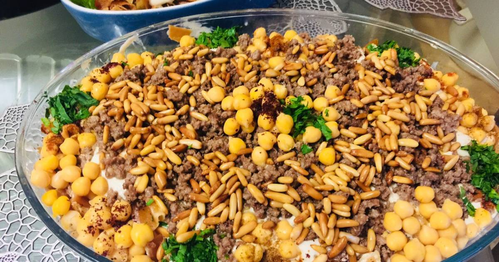

Fatte is one of the most delicious appetizers there is.
They're perhaps not the lightest food to eat on an empty stomach but,
genuinely the most enjoyable and fullfilling

Follow the following steps:
Hummus chickpeas 500g
1 garlic clove
3 big spoons flour
1 lemon
Half a spoon salt
hummus
3 arabic bread
Turkish Yoghurt 5dl
3 big spoons of butter
Soak the hummus chickpeas 24 hours beforehand with cold water!
After the 24 hours hours we take the hummus out of the water and boil them around an hour for it to be soft.
Cut the bread in very small pieces.
Add yoghurt, garlic, lemon juice, the flour, the hummus, the salt, and then we mix them.
Now you bring another saucepan and put it on the stove, and you add the hummus chickpeas and hot water and half spoon salt. On a low temprature.
Add the bread and mix them very fast for around a minute. Now you take out the water. Then return them to the stove and add the sauce we made beforehand and mix again
On a seperate pan you warm some butter and when it's boiling you pour it on top of the hummus.